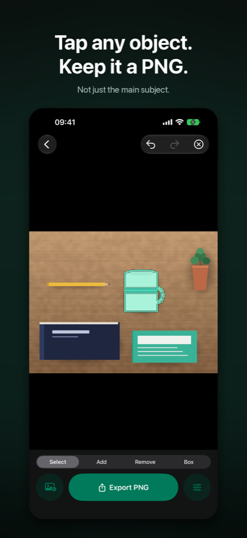
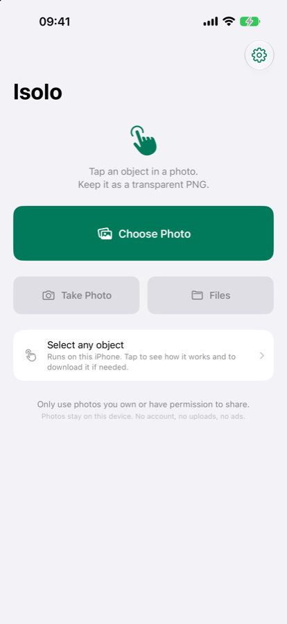

Isolo Cutout
Tap any object. Keep a transparent PNG.
Lift a person, a product, a chair or a plant out of any photo — not just the main subject. Everything happens on your iPhone: no account, no uploads, no ads.
- iPhone
- iOS 18 or later
- Photo & Video

Select anything
Isolo runs Apple's on-device selection model, so a single tap picks the object under your finger. Add more taps, drag a box or draw with the lasso to tidy up awkward edges. On iOS 27 and later this works for any object in the frame; on earlier versions it lifts the photo's main subject.
Keep the transparency
The export is a real transparent PNG, not a white background pretend-out. Export exactly the object with the transparent edges trimmed, or keep the original frame and aspect ratio. For marketplace listings you can lay the cutout on white or a colour with a margin.
Private by default
Only the photo you pick is read. Nothing is uploaded, there is no account, no analytics and no advertising. Once the selection model is installed, Isolo works completely offline.
Free, with an optional one-time Pro unlock
Free: unlimited photos, one object per photo, no watermark, no ads, no account.
Isolo Pro (one-time purchase, no subscription): original resolution, several objects combined into one PNG, box and lasso refinements, product-photo backgrounds and saved selections.
